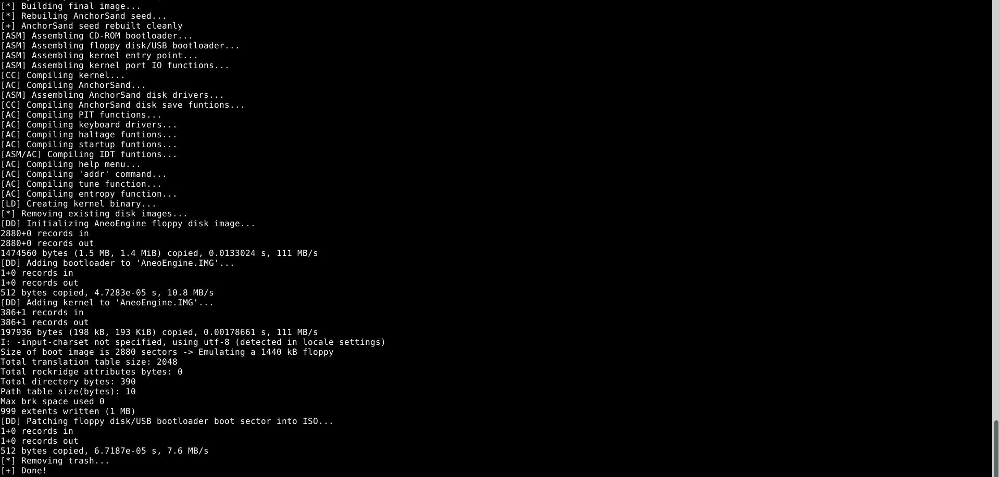

===================================================================================================== AneoC is not simply C with different syntax. It is a systems programming language and self-contained compiler designed for native software and AneoEngine development. While AneoC retains the direct, low-level programming model that makes C useful, the language and its compiler are developed as one complete system. AneoC directly understands the machine code and binary formats it produces instead of relying on a large collection of separate development tools. The compiler can create native x86_64 Linux executables and ELF32 i386 relocatable objects, allowing the same language to be used for ordinary programs and freestanding operating system components. AneoC does not need an external assembler such as NASM or GCC as to process compiler-generated assembly because it encodes machine instructions internally. This gives the compiler direct control over the path from parsed source code to the resulting binary and removes an unnecessary tranformation between the language and the processor instructions that eventually execute. Freestanding development is a primary part of AneoC's design rather than a special compiler mode added for unusual projects. AneoC was developed alongside AneoEngine, meaning the compiler is built around requirements that come directly from a real operating system. It understands external functions, external global variables, symbols, strings, data layouts, and relocations required by AneoEngine components. The compiler can generate ELF32 i386 object files that are linked directly into the AneoEngine kernel without libc, language runtimes, or compiler startup objects. Traditional C compilers are capable of freestanding development, but they are general-purpose tools designed to support an enormous number of environments. AneoC can instead concentrate on the systems it is actually intended to build. When AneoEngine requires a compiler feature, that feature can be implemented through the entire language and compilation process, from parsing and semantic handling to instruction encoding, symbol generation, and ELF relocation output. AneoC is also significantly more lightweight than most mainstream compilers. General-purpose compilers contain support for enormous collections of architectures, language standards, compiler extensions, optimization systems, debugging formats, operating systems, ABIs, and platform-specific behavior. Much of this functionality is necessary for compilers intended to work almost everywhere, but it is unnecessary for a compiler with a focused set of targets. AneoC does not carry large amounts of unrelated target support because it is designed around the environments it actually builds software for. Its smaller and more focused compiler can perform native machine code generation, symbol handling, relocation generation, and ELF output without requiring a massive compiler framework or an external assembler. This keeps the compilation system lightweight while still providing the features required for real native software and AneoEngine development. AneoC's smaller size is not achieved by producing interpreted code, bytecode, or depending on a large runtime. It remains a native compiler that directly generates machine code for the target processor. AneoC's direct machine code generation is one of the largest differences between it and a typical C development toolchain. Many compilation systems pass generated assembly text from a compiler to a separate assembler, which must parse that text and recreate the machine-level representation of the program. AneoC already understands the operation being compiled, the values involved, the symbols being referenced, and the target architecture. It can therefore encode the required machine instructions directly and place them into the binary structures it generates. When a function call references an external symbol, AneoC can create the appropriate symbol and relocation information for the resulting ELF object. When a native executable is generated, the compiler can construct the required executable structures itself. The compiler maintains knowledge of the program throughout the compilation process instead of converting its internal representation into assembly source and giving the remaining work to another tool. Structures in AneoC are also implemented as actual compiler features rather than textual substitutions or simple syntax transformations. The compiler understands named and anonymous structures, structure variables, arrays of structures, pointers to structures, nested array members, whole-structure assignment, and member access through both the . and -> operators. AneoC calculates structure sizes, member offsets, and alignment as part of its type and layout handling. When a structure member is accessed, the compiler determines the structure type, locates the requested member, calculates its offset, and generates the machine operation required to access the correct data. This means structure behavior is understood across the parser, type system, and code generator. These features were implemented because AneoEngine uses structures extensively for systems such as the IDT, filesystem nodes, hardware state, and other low-level data where exact memory layout is important. The complete AneoC compilation process is controlled as one project. Its lexer, preprocessor, parser, type handling, structure layout system, machine code generator, symbol handling, relocation handling, and ELF generation are all parts of the same compiler. If an expression produces an incorrect instruction, the machine code generator can be inspected directly. If a structure member has the wrong address, its calculated layout and offset handling can be traced. If an external kernel function fails to link, the generated symbol and relocation entries can be examined. There is no inaccessible compiler stage hidden behind another compiler or assembler. This complete control makes AneoC easier to adapt to AneoEngine and allows the language to evolve based on actual programming requirements rather than attempting to maintain compatibility with every compiler, architecture, operating system, and historical language behavior. AneoC is intentionally targeted instead of universal. GCC and Clang support decades of C standards, compiler extensions, processor architectures, operating systems, ABIs, optimization systems, and compatibility requirements. That makes them extremely powerful general-purpose compilers, but it also increases their size and complexity because their designs must account for environments completely unrelated to AneoEngine. AneoC has a different purpose. Its compiler can focus on native x86 software and the systems it is actually used to develop. Features can be designed around known targets, known object formats, and real code written for AneoEngine. This smaller scope makes the compiler understandable as a complete program, keeps unnecessary complexity out of the toolchain, and gives its development a direct relationship with the software that depends on it. AneoC retains the fundamental properties that make C useful for systems programming. Programs use native machine code, explicit data representation, pointers, arrays, structures, functions, global data, and direct memory access without requiring a managed runtime. The language does not attempt to hide the computer behind a virtual machine or large automatic runtime system. The programmer can still work directly with memory and low-level system interfaces, while the compiler remains small enough to be understood and modified as part of the same development environment. AneoC's improvement is not based on making low-level programming less direct. Instead, it keeps the useful systems programming model of C while placing it inside a lightweight compiler designed specifically around native programs and operating system development. AneoC is therefore not an improved version of C merely because its source code looks different. Its main improvement is architectural. The language, machine code generator, object generation system, and supported development environments are designed together instead of existing as unrelated parts of a larger toolchain. AneoC can compile ordinary native software, generate freestanding AneoEngine objects, encode its own machine instructions, construct ELF output, and manage symbols and relocations through one lightweight, self-contained compiler. From source code to machine code, the compiler controls the complete compilation path. AneoC takes the low-level programming principles that made C useful and applies them to a smaller, directly controlled language and compiler built to develop real native software and AneoEngine. ===================================================================================================== - AneoEngine is a trademark of Rocco Jose Himel. - The AneoEngine Logo is a trademark of Rocco Jose Himel. - AneoC is a trademark of Rocco Jose Himel. - The x86_64 architecture is a trademark of Advanced Micro Devices, Inc. - Linux and Tux the Penguin (the Linux logo) are trademarks of Linus Torvalds. - The i386 architecture is a trademark of Intel Corporation. - The GNU Compiler Collection (GCC) and the GCC logo are trademarks of the Free Software Foundation, Inc. 
AneoC compiling AneoEngine